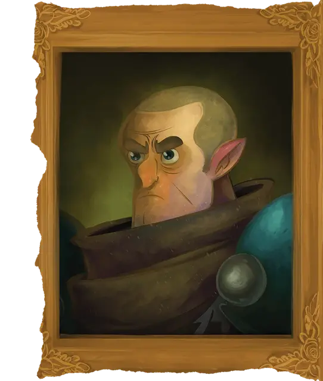

Омин Дран
Omin Dran
Средний Гуманоид (Полуэльф), законно-нейтральный, именной НИП

Класс Доспеха 18 (латы)
Хиты 65 (10к8 + 20)
Скорость 30 футов
| мод | спас | ||
|---|---|---|---|
| СИЛ | 16 | +3 | +3 |
| ЛОВ | 8 | −1 | −1 |
| ТЕЛ | 14 | +2 | +2 |
| мод | спас | ||
|---|---|---|---|
| ИНТ | 11 | +0 | +0 |
| МДР | 18 | +4 | +7 |
| ХАР | 12 | +1 | +4 |
Навыки Восприятие +7, Медицина +7, Обман +4, Проницательность +7, Убеждение +4
Чувства тёмное зрение 60 футов, пассивное Восприятие 17
Языки Общий, Гоблинский, Дварфийский, Эльфийский
Опасность 5 (1800 опыта)
Бонус мастерства +3
Особенности
Наследие фей. Омин совершает с преимуществом спасброски от очарования, и магия не может его усыпить.
Божественный удар. Один раз в каждый из своих ходов, когда Омин попадает по существу атакой оружием, он может дополнительно нанести 4 (1к8) урона того же типа, что и оружие.
Использование заклинаний. Омин является заклинателем 9-го уровня. Его базовой характеристикой является Мудрость (Сл спасброска от заклинания 15, +7 к попаданию атаками заклинаниями). У него подготовлены следующие заклинания жреца:
• Заговоры (неограниченно): указание [guidance], священное пламя [sacred flame], уход за умирающим [spare the dying], чудотворство [thaumaturgy];
• 1 уровень (4 ячейки): благословение [bless], приказ [command], божественное благоволение [divine favor], щит веры [shield of faith];
• 2 уровень (3 ячейки): улучшение характеристики [enhance ability], удержание личности [hold person], магическое оружие [magic weapon], тишина [silence], божественное оружие [spiritual weapon];
• 3 уровень (3 ячейки): маяк надежды [beacon of hope], мантия крестоносца [crusader's mantle], рассеивание магии [dispel magic], множественное лечащее слово [mass healing word], духовные стражи [spirit guardians];
• 4 уровень (3 ячейки): защита от смерти [death ward], свобода перемещения [freedom of movement], поиск существа [locate creature], каменная кожа [stoneskin];.
• 5 уровень (1 ячейки): рассеивание зла и добра [dispel evil and good], небесный огонь [flame strike], удержание чудовища [hold monster], высшее восстановление [greater restoration], знание легенд [legend lore].
Действия
Мультиатака. Омин совершает две атаки молотом.
Молот. . Рукопашная атака оружием: +6 к попаданию, досягаемость 5 футов, одна цель. Попадание: 10 (2к6+4) дробящего урона.
Реакции
Благословение бога войны (Перезаряжается после короткого или продолжительного отдыха). Когда существо в пределах 30 футов от Омина совершает бросок атаки, но до того, как узнает, попадет оно или промахнется, Омин может предоставить существу бонус +10 к этому броску.
Описание
“Мой долг, прежде всего, перед моими акционерами. И я единственный акционер”.
Оминифис Херевард Дран провел годы своего становления в маленьком городке Красная лиственница, где его мать, Пророчица, управляла популярной гостиницей и рестораном. В короткие периоды передышки, которые давала работа в семейном бизнесе, Омин и его сестры Ауспиция и Портентия имели обыкновение бродить по холмам и тропам вокруг города, мечтая о приключениях. Но однажды троицу постигло приключение иного рода, когда подземные руины, которые они часто исследовали - оказалось существом, называемым Блуждающим склепом, который забрал Ауспицию из мира.
Омин Дран создал организацию под названием Acquisitions Incorporated, чтобы облегчить и расширить поиски своей истинной сестры, по крайней мере частично. Ибо, несмотря на его беспрецедентный успех в создании рынка франчайзинговых приключений по всему Побережью Мечей и за его пределами, истинная цель Омина ускользает от большинства людей. Известно, что он поклоняется Тиморе, безжалостен в вопросах бизнеса, беспомощен в вопросах любви и безнадежен в азартных играх. Омина также часто обвиняют в том, что он один из Замаскированных Лордов Глубоководья, хотя это обвинение вызывает в ответ лишь смешок. И даже если бы слухи были правдой, Омин никогда не стал бы использовать такую позицию для большей финансовой выгоды и власти. Потому что это было бы неправильно...